This is a simple slide show showing you clothing styles you can wear to the gym. You do not need expensive clothing or the nicest shoes. As long as you wear something fitted and comfortable. Moisture wicking material is good to have if you plan or do sweat alot. It will keep you cooler during your workout if you're not wanting to drastically sweat. For shoes, get a sturdy pair and make sure to double knot those laces!
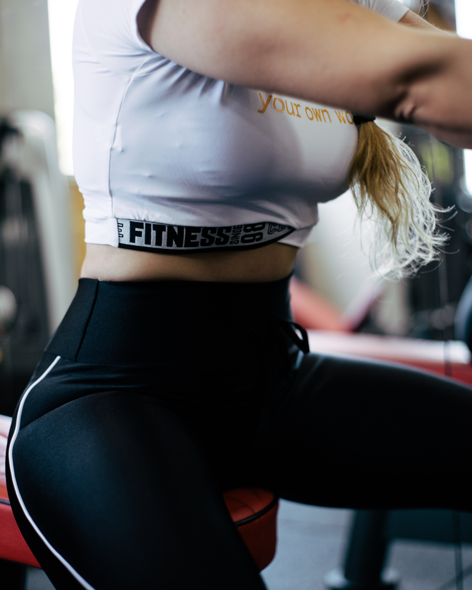
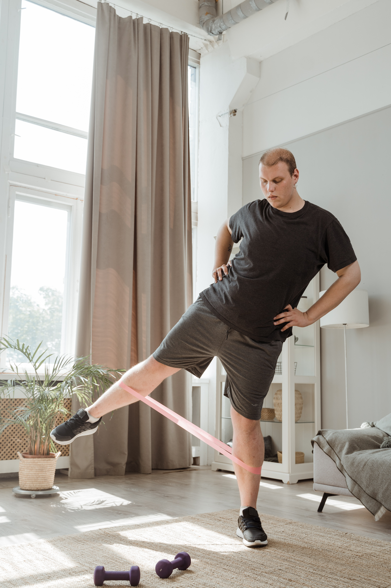
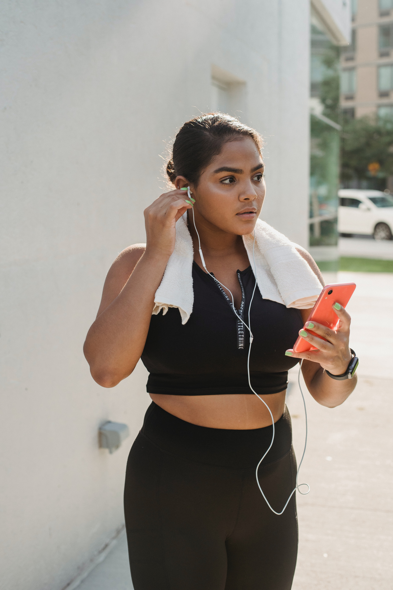
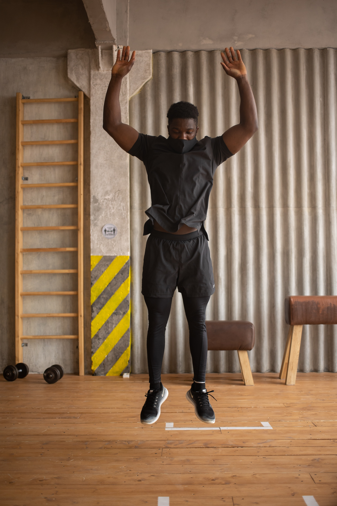
Please Read The Disclaimer Below
Not all exercises are suitable for everyone. The information on this website or any other exercise program may result in injury. ALWAYS consult your DOCTOR before
beginning any exercise program or following advice from others, especially if you have any chronic
or recurring condition, and/or if you are pregnant, nursing, or elderly. Exercising is NOT recommended if you experience chest pains or have
uncontrolled blood pressure or other uncontrolled chronic diseases.
By performing any of the exercises on this website, YOU assume ALL risks of
injury from doing so. Nikki J Beginner Fitness is NOT responsible or liable for
any injury or loss you may sustain by following the information on this website.
ALWAYS warm up before beginning any workout and NEVER exercise beyond
the level at which you feel comfortable.
PLEASE stop exercising immediately if you experience pain, soreness, fatigue,
shortness of breath, dizziness, lightheadedness, blurred vision, headache, nausea,
sickness, illness, dehydration, excessive sweating, or any other discomfort. If any
of these symptoms persists after you stop exercising, please seek medical help
immediately.
This exercise program and the class tutorials and instructions provided in this
program are NOT intended, and should NOT be used, as a substitute for
professional medical advice, diagnosis or treatment.
Nikki J Beginner Fitness makes NO representation or warranty, whether
express or implied, with respect to the safety, usefulness, or the result of this
exercise program.


 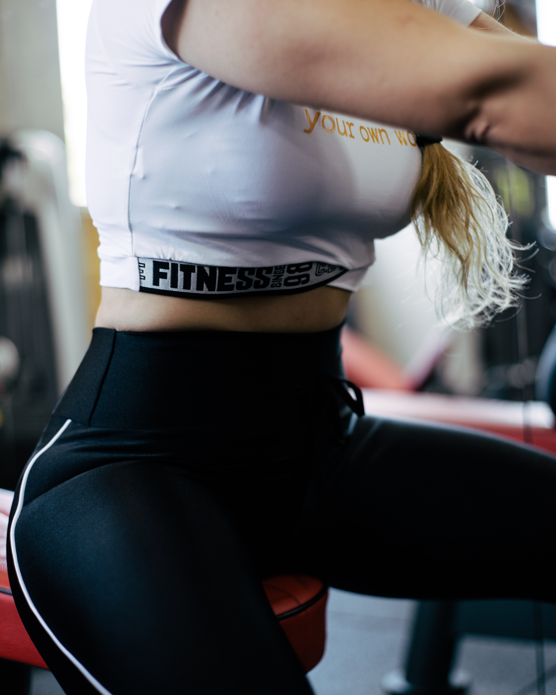
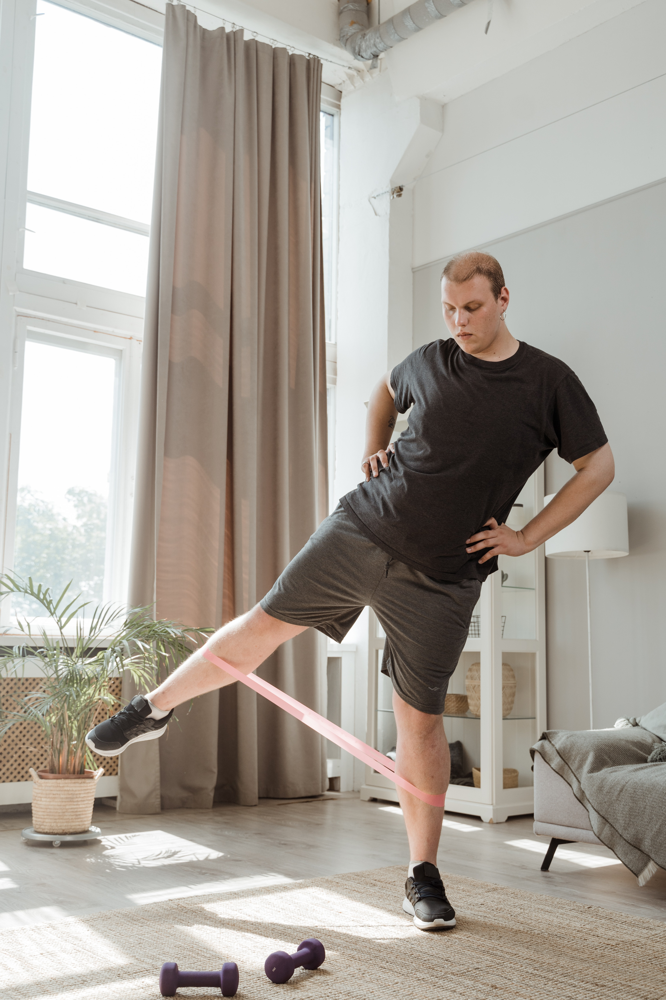
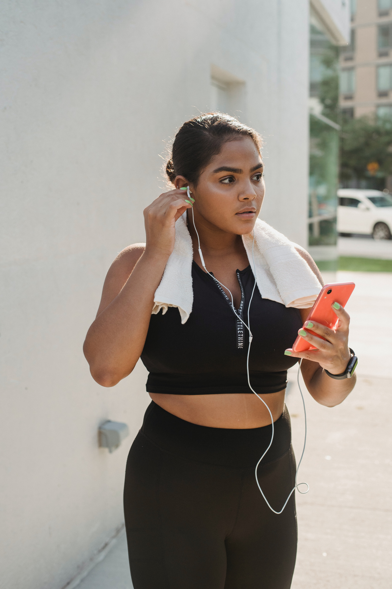
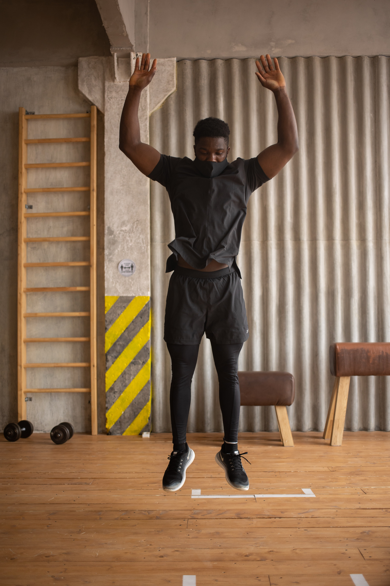
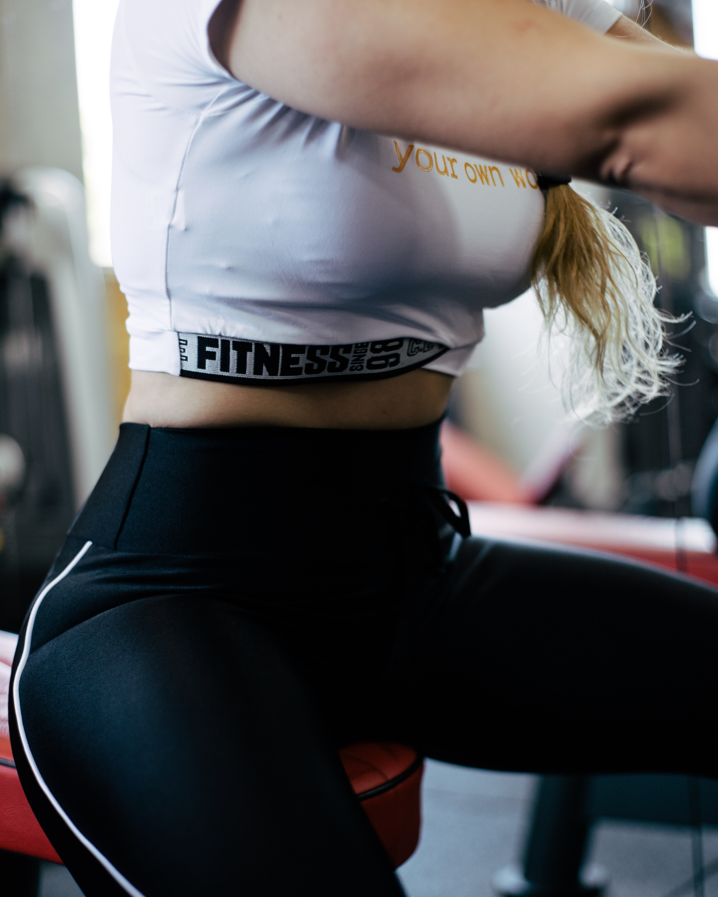
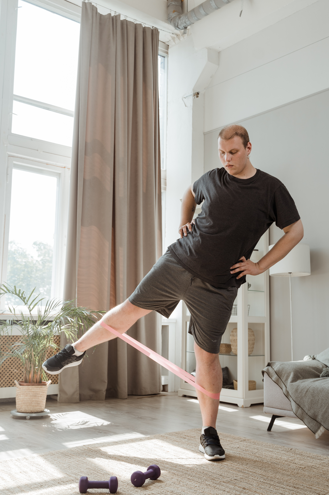
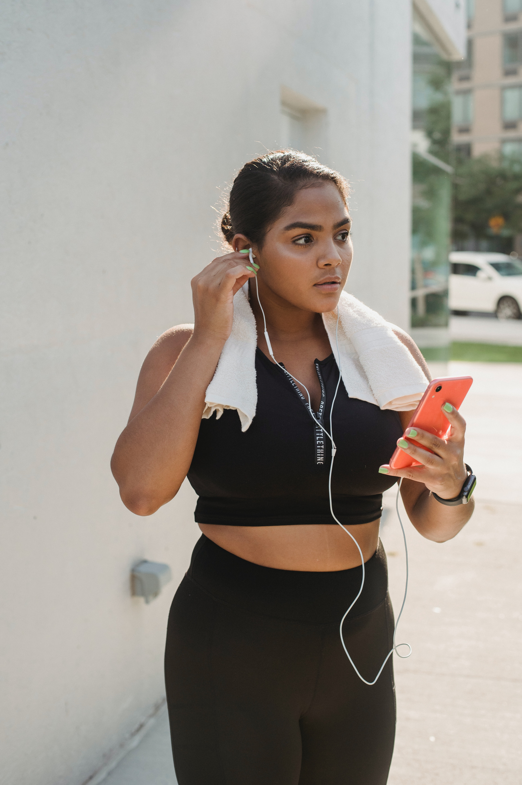
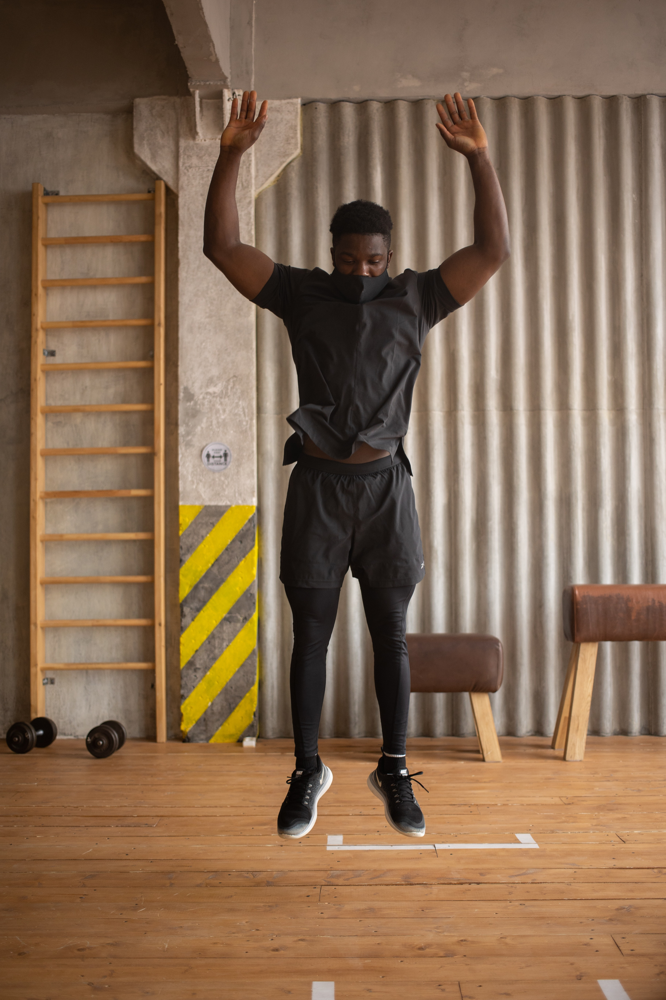